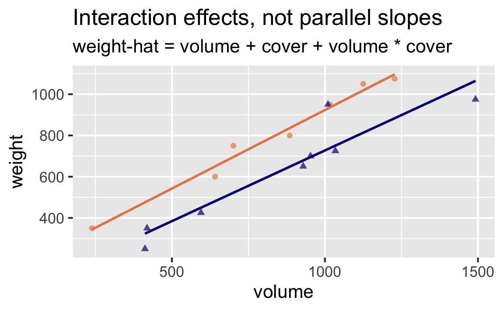
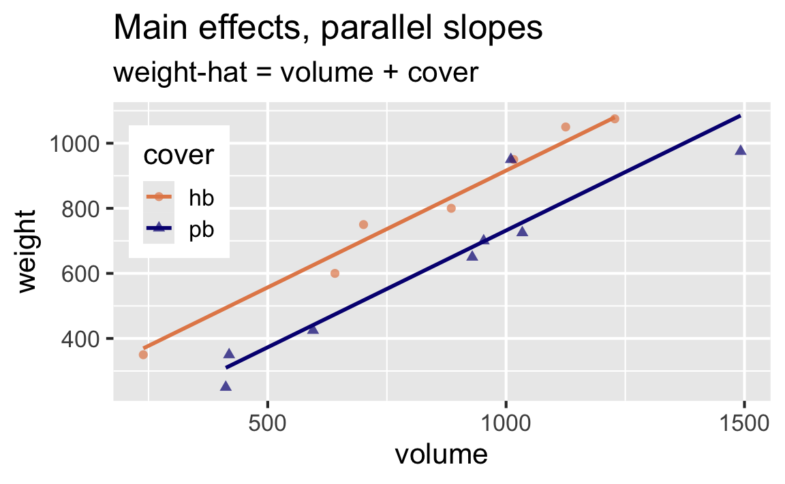

library(DAAG)
library(tidyverse)
library(tidymodels)Main and interaction effects
Modeling and inference
Packages
- DAAG for data
- tidyverse for data wrangling and visualization
- tidymodels for modeling
Data: Book weight and volume
The allbacks data frame gives measurements on the volume and weights of 15 books, some of which are paperback and some of which are hardback
volume- cubic centimetresarea- square centimetresweight- gramscover-hborpb
# A tibble: 15 × 4
volume area weight cover
<dbl> <dbl> <dbl> <fct>
1 885 382 800 hb
2 1016 468 950 hb
3 1125 387 1050 hb
4 239 371 350 hb
5 701 371 750 hb
6 641 367 600 hb
7 1228 396 1075 hb
8 412 0 250 pb
9 953 0 700 pb
10 929 0 650 pb
11 1492 0 975 pb
12 419 0 350 pb
13 1010 0 950 pb
14 595 0 425 pb
15 1034 0 725 pb These books are from the bookshelf of J. H. Maindonald at Australian National University.
Two possible explanations
Suppose we want to predict weights of books from their volume and cover type (hardback vs. paperback). Do these visualizations suggest that a model that doesn’t allow for the rate of change in weight to vary by cover type (parallel lines) is a better fit or a model that does allow (non-parallel lines)?


In pursuit of Occam’s razor
Occam’s Razor states that among competing hypotheses that predict equally well, the one with the fewest assumptions should be selected.
Model selection follows this principle.
We only want to add another predictor to the model if the addition of that variable brings something valuable in terms of predictive power to the model.
In other words, we prefer the simplest best model, i.e. parsimonious model.
In pursuit of Occam’s razor
Visually, which of the two models is preferable under Occam’s razor?


Model 1: volume + cover
Main effects: Rate of change for weight as volume increases is the same for hardback and paperback books.
allbacks_main_fit <- linear_reg() |>
fit(weight ~ volume + cover, data = allbacks)
tidy(allbacks_main_fit)# A tibble: 3 × 5
term estimate std.error statistic p.value
<chr> <dbl> <dbl> <dbl> <dbl>
1 (Intercept) 198. 59.2 3.34 0.00584
2 volume 0.718 0.0615 11.7 0.0000000660
3 coverpb -184. 40.5 -4.55 0.000672 . . .
glance(allbacks_main_fit)# A tibble: 1 × 12
r.squared adj.r.squared sigma statistic p.value df
<dbl> <dbl> <dbl> <dbl> <dbl> <dbl>
1 0.927 0.915 78.2 76.7 0.000000145 2
# ℹ 6 more variables: logLik <dbl>, AIC <dbl>, BIC <dbl>,
# deviance <dbl>, df.residual <int>, nobs <int>Model 2: volume + cover + volume*cover
Interaction effects: Rate of change for weight as volume increases is different for hardback and paperback books.
allbacks_int_fit <- linear_reg() |>
fit(weight ~ volume + cover + volume*cover, data = allbacks)
tidy(allbacks_int_fit)# A tibble: 4 × 5
term estimate std.error statistic p.value
<chr> <dbl> <dbl> <dbl> <dbl>
1 (Intercept) 162. 86.5 1.87 0.0887
2 volume 0.762 0.0972 7.84 0.00000794
3 coverpb -120. 116. -1.04 0.321
4 volume:coverpb -0.0757 0.128 -0.592 0.566 . . .
glance(allbacks_main_fit)# A tibble: 1 × 12
r.squared adj.r.squared sigma statistic p.value df
<dbl> <dbl> <dbl> <dbl> <dbl> <dbl>
1 0.927 0.915 78.2 76.7 0.000000145 2
# ℹ 6 more variables: logLik <dbl>, AIC <dbl>, BIC <dbl>,
# deviance <dbl>, df.residual <int>, nobs <int>R’s got your back!
When you add an interaction effect to a model, R will always add the main effects of those variables too, even if you leave them out of your model formula:
# A tibble: 4 × 5
term estimate std.error statistic p.value
<chr> <dbl> <dbl> <dbl> <dbl>
1 (Intercept) 162. 86.5 1.87 0.0887
2 volume 0.762 0.0972 7.84 0.00000794
3 coverpb -120. 116. -1.04 0.321
4 volume:coverpb -0.0757 0.128 -0.592 0.566 Choosing between models
The model with the interaction effects has more predictors, and remember that when comparing models with different numbers of predictors, we use adjusted \(R^2\) for model selection:
\(R^2\):
glance(allbacks_main_fit)$r.squared[1] 0.9274776glance(allbacks_int_fit)$r.squared[1] 0.9297137Adjusted \(R^2\):
glance(allbacks_main_fit)$adj.r.squared[1] 0.9153905glance(allbacks_int_fit)$adj.r.squared[1] 0.9105447. . .
\(R^2\) is higher for the model with the interaction effect.
Adjusted \(R^2\) is not higher for the model with the interaction effect, therefore we do not need the interaction effect, the main effects model is good enough!